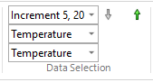
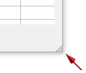
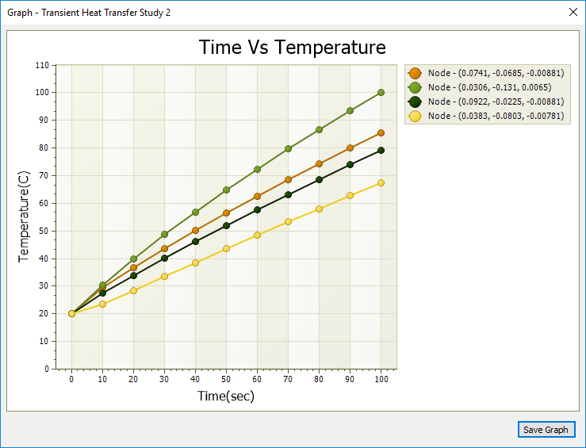
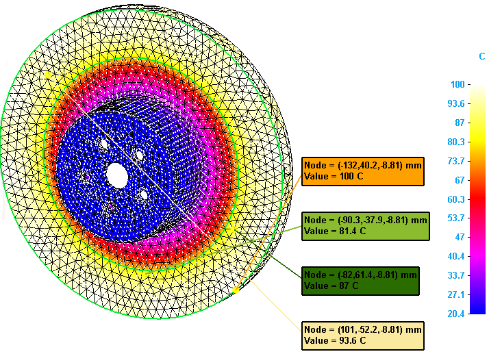
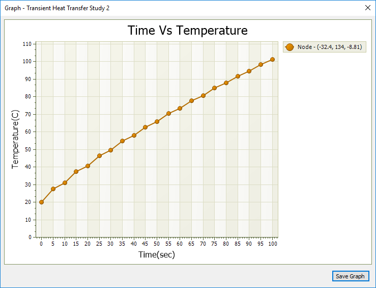
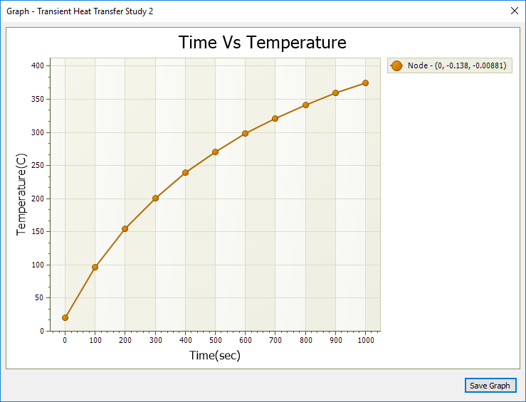
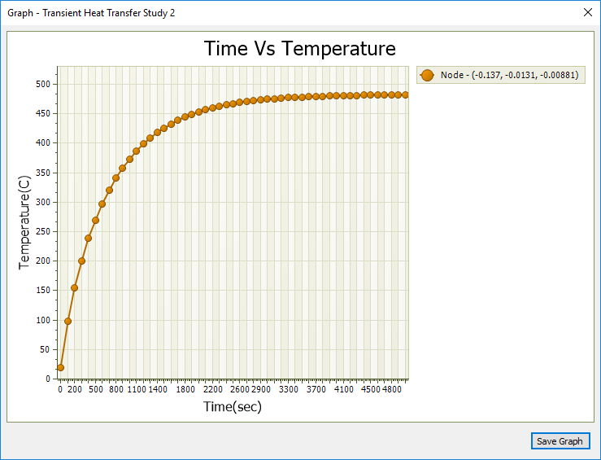
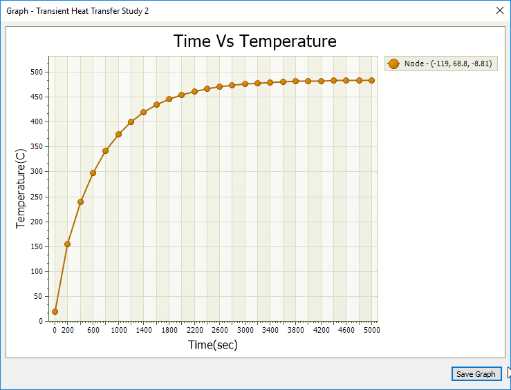

Graph nodal analysis results
When probing the results of a transient heat transfer study, you can graph the temperature data at each time step for nodes selected in the Probe Table. When probing the results of a harmonic frequency response analysis, you can graph the displacement (translation) at each frequency for selected nodes.
You can save your graphs to the simulation results document (*.ssd) when you select the Save Graph button.
-
On the Home tab→Data Selection group, use the Result Mode list to cycle through each plot produced at each time interval, until you find the plot at the time increment that shows the highest temperatures.

-
Select the Home tab→Probe group→Probe command.
The Probe Table is opened.
-
In the Probe Table, use either the Node, Face, or Edge option to add nodal temperature values to the table. For information about the selection methods, see Display node analysis data.
-
Use the Sort and Find shortcut commands to identify the nodes with the highest stress values.
To see all of the data at once, size the Probe Table using the control in the lower-right corner.

-
Use Shift+click and Ctrl+click to select up to 10 data cells.
-
Select the Show Graph button to show the temperature data in graphical form.
Probe labels matching each of the selected nodes are displayed in the simulation results, color-coded to match the data in the graph window.
Example:This graph shows the selected node data for a transient heat study.


-
To save a graph for reuse after the Probe Table is closed, click the Save Graph button.
Graphs that you save are included in the report when you select the Create Report command. You can view, rename, and delete saved graphs using shortcut commands from the Simulation pane→Results→Graphs node. You can reopen saved graphs in multiple graph windows to compare the trend.
Use the transient heat Temperature-Nodal graph to find the steady state temperature
While the example above shows how the temperature changes over time, it does not indicate the temperature at which a steady operational state is reached. If you close the Simulation Results, you can modify the transient heat transfer study to change input values, and then solve it again. Adjust the End Time (the length of time the study runs), until you are able to generate a graph that shows that temperatures have reached a nearly steady state. To maintain a useful temperature distribution of node values along the curve, you can also experiment with changes to the Calculation Time Increment or the Output Time Increment. As you change either of these options, the read-only Number of Results value in the Transient Heat Options dialog box updates to show the number of data points that will be plotted on the graph.
The first graph shows the starting point for the comparison. It is a transient heat graph of a single node generated using the following transient heat study values:
-
End Time=100
-
Calculation Time Increment=1
-
Output Time Increment=5
-
Number of Results=20 (plus one baseline plot)

The second example extended the study processing time.
-
End Time=1000
-
Calculation Time Increment=10
-
Output Time Increment=100
-
Number of Results=10 (plus one baseline plot)

The last two examples use an adjusted End Time=5000 sec. Running the study for this length of time produces a graph that flattens to show the steady state temperature. The node distribution along the curve varies with the number of results produced.
-
End Time=5000
-
Calculation Time Increment=50
-
Output Time Increment=100
-
Number of Results=50 (plus one baseline plot)

-
End Time=5000
-
Calculation Time Increment=10
-
Output Time Increment=200
-
Number of Results=25 (plus one baseline plot)
This graph also has a nice distribution of values along the curve.
